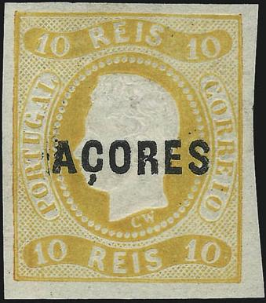
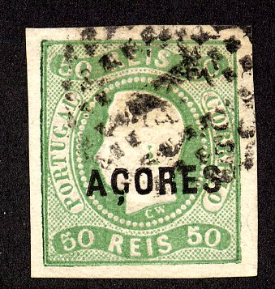
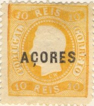
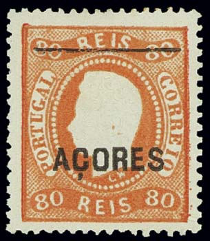
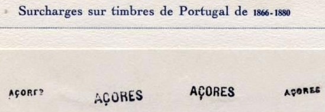

Return To Catalogue -
Azores part 2 - Acores
part 3 - Angra - Horta - Ponta
Delgada
(From 1932 on the stamps of Portugal were
used)
Note: on my website many of the
pictures can not be seen! They are of course present in the
catalogue;
contact me if you want to purchase the catalogue.
Note: I have seen the stamps of 1868, 1871 and 1880 with overprint "ACORES" (small and large overprint, all uncancelled), but with an additional small horizontal line, covering the value at the top. I do not know if these are essays or forgeries.
Imperforate

The cancels on these stamps look suspicious to me....
5 r black 10 r yellow 20 r brown 50 r green 80 r orange 100 r lilac
The 25 r red was not officially issued.
Value of the stamps |
|||
vc = very common c = common * = not so common ** = uncommon |
*** = very uncommon R = rare RR = very rare RRR = extremely rare |
||
| Value | Unused | Used | Remarks |
| 5 r | RRR | RRR | Reprint: ** |
| 10 r | RRR | RRR | Reprint: ** |
| 20 r | R | R | Reprint: ** |
| 25 r | - | - | Reprint: ** |
| 50 r | RR | RR | Reprint: ** |
| 80 r | RR | RR | Reprint: ** |
| 100 r | RR | RR | Reprint: ** |
Perforated (12 1/2)




5 r black (overprint red) 10 r yellow 20 r brown 25 r red 50 r green 80 r orange 100 r lilac 120 r blue 240 r lilac
Value of the stamps |
|||
vc = very common c = common * = not so common ** = uncommon |
*** = very uncommon R = rare RR = very rare RRR = extremely rare |
||
| Value | Unused | Used | Remarks |
| 5 r | *** | *** | Reprint: * |
| 10 r | *** | *** | Reprint: * |
| 20 r | *** | *** | Reprint: * |
| 25 r | *** | *** | Reprint: c |
| 50 r | R | R | Reprint: ** |
| 80 r | RR | RR | Reprint: ** |
| 100 r | RR | RR | Reprint: ** |
| 120 r | R | R | Reprint: ** |
| 240 r | RR | RR | Reprint: *** |
Cancels:
Before 1869 Angra used the numeral cancel "48". Horta
used "49", Ponta Delgada used "50" (all with
more than 2 interrupted lines)
After 1869 Angra used the numeral cancel "42". Horta
used "43", Ponta Delgada used "44" (all with
2 interrupted lines).
Reprints of the 25 r and 50 r imperforate stamps:



Reprint made in 1885, note the horizontal black line at the top.
And some forged overprints:

(Forged overprints)
Large overprint:
5 r black (overprint red) 10 r yellow 10 r green 15 r brown 20 r brown 25 r red 50 r green 50 r blue 80 r orange 100 r lilac 120 r blue 150 r blue 150 r yellow 240 r lilac 300 r violet
Te above overprints exist in two types, small 'O' and 'S', or large 'O' and 'S'. Some values exist in both types (5 r, 10 r yellow, 20 r, 25 r, 50 green, 80 r, 100 r, 120 r and 240 r).
Value of the stamps |
|||
vc = very common c = common * = not so common ** = uncommon |
*** = very uncommon R = rare RR = very rare RRR = extremely rare |
||
| Value | Unused | Used | Remarks |
| 5 r | * | * | Reprint: * |
| 10 r yellow | ** | ** | Reprint: * |
| 10 r green | *** | *** | |
| 15 r | ** | ** | |
| 20 r | *** | ** | Reprint: * |
| 25 r | ** | * | Reprint: c |
| 50 r green | *** | ** | Reprint: * |
| 50 r blue | *** | *** | Reprint: * |
| 80 r | *** | *** | Reprint: * |
| 100 r | *** | *** | Reprint: * |
| 150 r blue | R | R | |
| 150 r yellow | R | R | |
| 200 r | R | R | Reprint: * |
| 240 r | RR | RR | Reprint: *** |
| 300 r | *** | *** | |
Small overprint (1882-1885):

10 r green 15 r brown 20 r yellow 20 r red 50 r blue 80 r orange 100 r lilac 150 r blue 150 r yellow 300 r violet 1000 r black
Value of the stamps |
|||
vc = very common c = common * = not so common ** = uncommon |
*** = very uncommon R = rare RR = very rare RRR = extremely rare |
||
| Value | Unused | Used | Remarks |
| 10 r | *** | *** | |
| 15 r | * | * | |
| 20 r yellow | *** | *** | |
| 20 r red | *** | *** | |
| 50 r | RR | RR | |
| 80 r | *** | * | |
| 100 r | ** | * | |
| 150 r blue | RR | RR | |
| 150 r yellow | ** | ** | |
| 300 r | *** | *** | |
| 1000 r | *** | *** | |

1885 reprints.
Forgeries, examples:


Two forged 'ACORES' overprints.



{kind=link}
{kind=link}
{kind=link}
{kind=link}